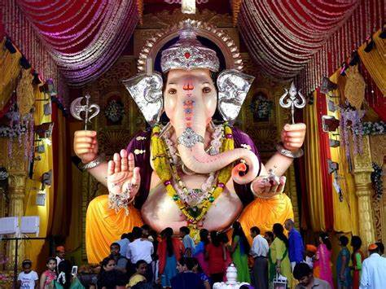
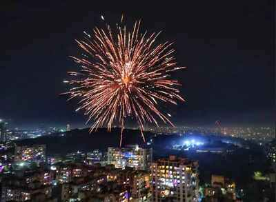
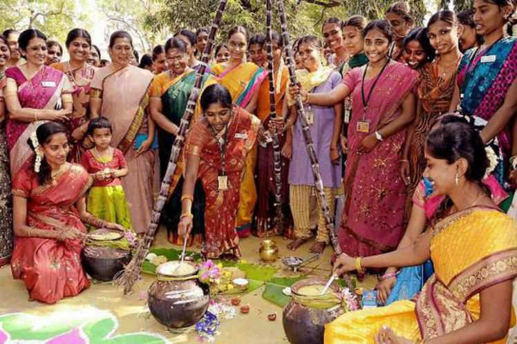
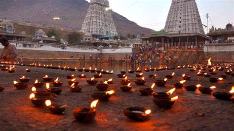
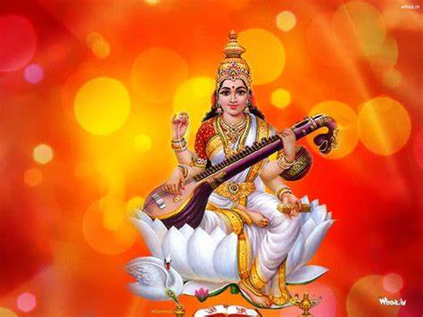

HINDU FESTIVALS
 GANESH CHATURTHI
Ganesh Chaturthi (ISO: Gaṇeśa Caturthī), also known as Vinayak Chaturthi (Vināyaka Caturthī) or Ganeshotsav, is a Hindu festival commemorating the birth of the Hindu god Ganesha. The festival is marked with the installation of Ganesha's clay idols privately in homes and publicly on elaborate pandals (temporary stages). Observances include chanting of Vedic hymns and Hindu texts, such as prayers and vrata (fasting).Offerings and prasada from the daily prayers, that are distributed from the pandal to the community, include sweets such as modak as it is believed to be a favourite of Ganesha. The festival ends on the tenth day after start, when the idol is carried in a public procession with music and group chanting, then immersed in a nearby body of water such as a river or sea, called visarjan on the day of Ananta Chaturdashi. In Mumbai alone, around 150,000 statues are immersed annually.Thereafter the clay idol dissolves and Ganesha is believed to return to his celestial abode.

DIWALI
Diwali, also spelled Divali, one of the major religious festivals in Hinduism, Jainism, and Sikhism, lasting for five days from the 13th day of the dark half of the lunar month Ashvina to the second day of the light half of the lunar month Karttika. (The corresponding dates in the Gregorian calendar usually fall in late October and November.) The name is derived from the Sanskrit term dipavali, meaning “row of lights.” The festival generally symbolizes the victory of light over darkness.

PONGAL
Pongal, also referred to as Thai Pongal (தைப்பொங்கல்), is a multi-day Hindu harvest festival celebrated by Tamils in India and Sri Lanka.It is observed at the start of the month Thai according to Tamil solar calendar,and this festival is celebrated usually on January 14 or January 15 depending on the sun's orbit around earth that particular year.It is dedicated to the sun god,Surya, and corresponds to Makar Sankranti, the harvest festival under many regional names celebrated throughout India. The three days of the Pongal festival are called Bhogi Pongal, Surya Pongal, and Mattu Pongal. Some Tamils celebrate a fourth day of Pongal known as Kanum Pongal.
According to tradition, the festival marks the end of winter solstice, and the start of the sun's six-month-long journey northwards when the sun enters the Capricorn, also called as Uttarayana.

DEEPAM
Karthigai Deepam or Thirukarthigai Deepam is a famous festival celebrated in Tamil Nadu, Kerala, Andhra, and Karnataka. The Festival is known as the “Festival of Lights,” as earthen lamps are lit at homes and temples. The lighting of lamps during the Thirukarthigai festival indicates the removal of Ignorance and acquiring Knowledge. This Festival is also known as Karthiga Poornima, Deva Diwali, and Tripurari Purnima. In Tamil Nadu, the people celebrate the Thirukarthigai festival for three successive days. The children burst the leftover crackers of Diwali during this Festival.
The Mondays of this month are known as ‘Karthiga Somavar’ and are auspicious for Shiva’s worship. Devotees also offer worship to Muruga and Vishnu during the Karthiga month. Devotees undergo vratham/fasting during the Karthigai month. People avoid intake of non-veg foods and offer special prayers to the deities.

POOJA
Saraswati is the Hindu goddess of knowledge, music, art, speech, wisdom, and learning.She is one of the Tridevi, along with the goddesses Lakshmi and Parvati.own mention of Saraswati as a goddess is in the Rigveda. She has remained significant as a goddess from the Vedic period through the modern period of Hindu traditions.She is generally shown to have four arms, holding a book, a rosary, a water pot, and a musical instrument called the veena. Each of these items have a symbolic meaning in Hinduism.
Some Hindus celebrate the festival of Vasant Panchami (the fifth day of spring, and also known as Saraswati Puja and Saraswati Jayanti in many regions of India) in her honour,and mark the day by helping young children learn how to write the letters of the alphabet on that day. The goddess is also revered by believers of the Jain religion of west and central India,as well as some Buddhist sects.

MATTU PONGAL
Mattu Pongal (Tamil: மாட்டுப் பொங்கல்/பட்டிப் பொங்கல்) is the third day of the four-day Pongal festival. According to the Gregorian calendar it is celebrated on 16 January. Though the name of the festival is specific to Tamil Nadu, it is also celebrated in other southern Indian states such as Andhra Pradesh and Karnataka. Makar Sankranti is a festival that marks the start of northern declination of the Sun from the Zodiac sign of Sagittarius to Capricorn, which according to Tamil calendar usually falls on 14 January.
In Tamil, the word "Mattu" means bull and this day of Pongal is for celebration of cattle, particularly bulls that play a vital role by working hard to help the farmers to raise crops on their fields, falls on the following day, 15 January. The festival is also observed by ethnic Tamil population of Sri Lanka.
The festival day is also a special occasion when the landlord and the peasant, rich and poor, old and young all dine together in a spirit of bonhomie without any restraint of caste and creed. The festival is thus an occasion when the fresh harvests from the fields are shared in the form of food and sweets not only with the community but also with animals and birds. It also represents the change of season.